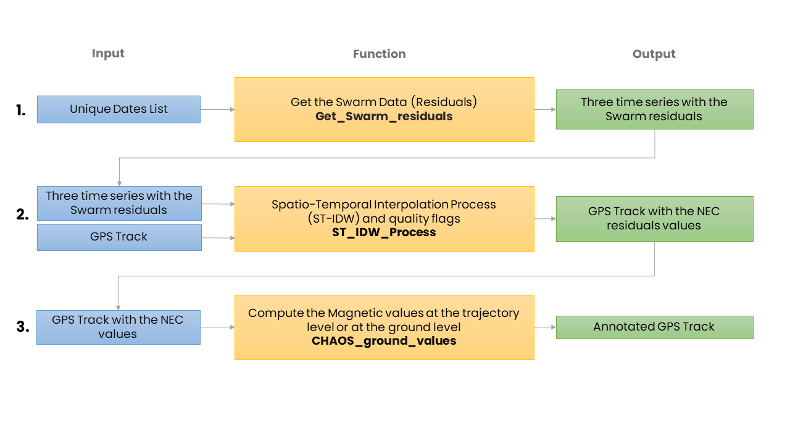
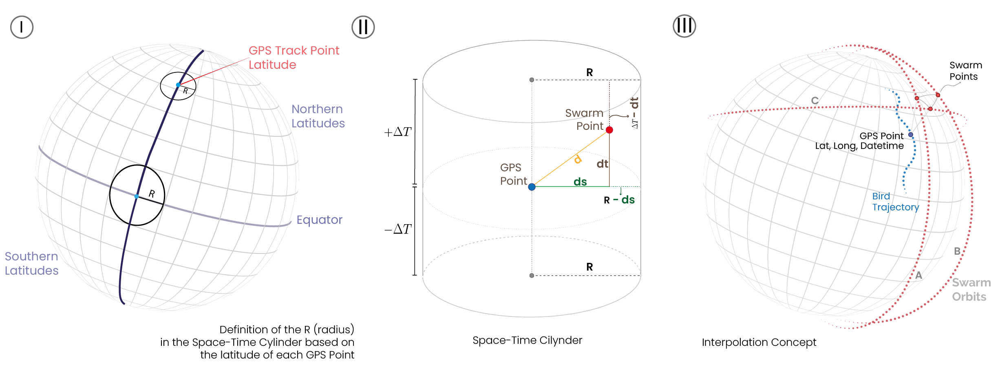

How MagGeo Works
MagGeo is a tool that contains a set of python functions to carry out a data manipulation and mathematical processes to transform the data from Swarm Constellation,include the modelled values from CHAOS model ( last version in December 2019) and annotate the interpolated values into every GPS point in a given GPS trajectory.
The following process is a set of three steps, 1. Get the Swarm data, particulary the magnetic residuals in the NEC components. 2. Run the Spatio-temporal kernel where the script will filter the Swarm data based on our spatial-temporal cylinder, to interpolate the magnetic componentes in the NEC frame for the given GPS track. Finally using the enriched GPS track, the final step will be the 3. Calculation of Magnetic Components which use the CHAOS model to compute the magnetic components at the ground level. With the interpolated magnetic values corrected by the ionospheric contribution. The script will compoute the other magnetic components including F (magnetic intensity), H (Horizontal component), Declination and Inclination. For detalied information of this process go to the Main Notebook.

Interpolation (ST-IDW) and Annotation Process
Once we have requested the data we need for each point in the GPS Track and considering we have gathered the available data from the three satellites for one day ( 24 hours, every 60 seconds around 1440 Swarm measures per satellite). Now we need to filter in space and time the available points to compute the magnetic values for each GPS point in its particular date and time. Therefore, before running the interpolation process we set four functions that will require the latitude and longitude and the epoch time of each GPS point to filter the Swarm points into what we called Space-Time Cylinder. The following picture can provide a better explanation about how the points inside the space-time cylinder are included or excluded. Figure I, shows how the R of the Space-Time cylinder is based on the GPS point latitude. Figure II, illustrate the geometric components behing the space-time cylinder where the points are filtered and included in the interpolation process. Figure B, will help you to understand how the following functions compute the required parameters Figure III shows the idea behind the interpolation process for each GPS point, requesting and processing the avaliable Swarm messuares by the three satellites. For more information about the time-space windows please read the full paper where we explain the details of it.

📘 SwarmMagAnnotation function:
Working as the main function for the annotation process, this functions meets the previous functions running the space-time window filters, and the computing theST- IDW process. This function will run a interpolation process for each GPS Point considering only the Swarm points inside the Space-Time cylinder computed by the four previous functions. The return value will be an array with the values the annotated magnetic values for the GPS point. The function will be executed inside a loop going through the GPS track. This function is the annotation process per se, and through this process at first we run the interpolation getting the magnetic values in NEC reference frame and then we compute the extra magnetic values that are useful to get a better understating of the earth’s magnetic field at this particular location, date and time.
Therefore, before running the interpolation process we set four functions that will require the latitude and longitude and the epoch time of each GPS point to filter the Swarm points into what we called Space-Time Cylinder. The following picture can provide a better explanation about how the points inside the space-time cylinder are included or excluded. Figure I, shows how the R of the Space-Time cylinder is based on the GPS point latitude. Figure II, illustrate the geometric components behing the space-time cylinder where the points are filtered and included in the interpolation process. Figure B, will help you to understand how the following functions compute the required parameters Figure III shows the idea behind the interpolation process for each GPS point, requesting and processing the avaliable Swarm messuares by the three satellites. For more information about the time-space windows please read the full paper where we explain the details of it.
📘 Auxiliary Functions:The function ST_IDW_Process includes 4 auxiliary functions to run the sptatial-temporal kernel
- distance_to_GPS function: Is the function in charge to calculate the distance between each GPS Point and the Swarm Point.
- Kradius function: Is the function in charge to compute the R (radius) value in the cylinder. The R value will be considered based on the latitude of each GPS Point.
-
DistJ function: This function will calculate the
dvalue as the hypotenuse created in the triangle created amount the locations of the GPS point, the location of the Swarm points and the radius value. -
DfTime_func function: This is a time function to selected the points in the range of a the DeltaTime -
DTwindow. The Delta time window has been set as 4 hours for each satellite trajectory.